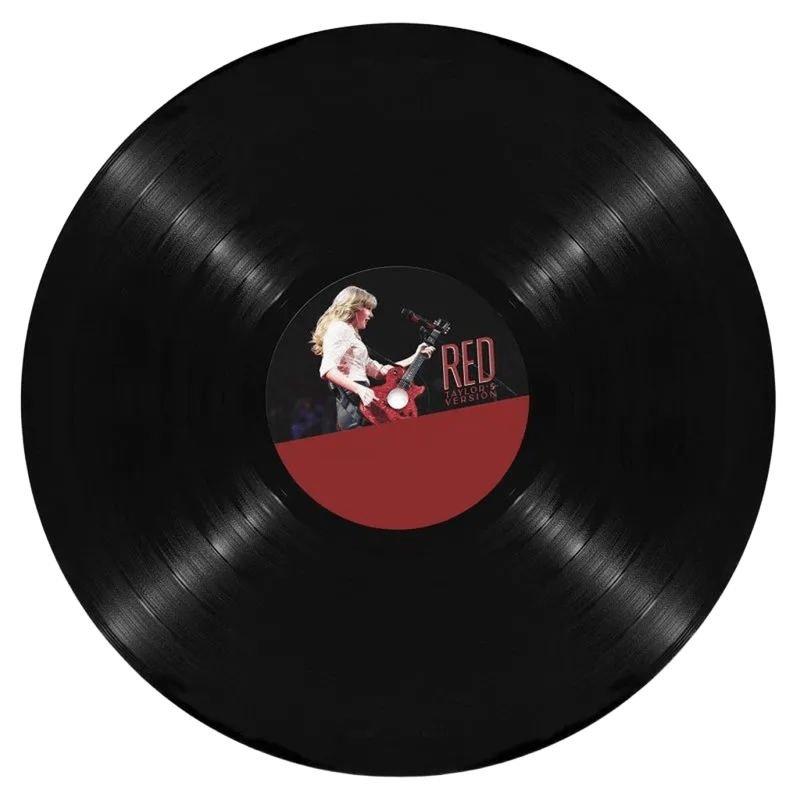

Taylor Swift reinventa o pop em seu novo álbum — e mostra por que continua no topo da geração

Ela voltou com tudo — e desta vez, com mais brilho do que nunca. Taylor Swift lançou seu tão esperado álbum “The Life of a Showgirl” no dia 3 de outubro de 2025, e o projeto já está sendo chamado de um divisor de águas na carreira da artista. Depois de mergulhar nas emoções intensas e melancólicas de The Tortured Poets Department (2024), a cantora ressurge reinventada, assumindo o papel principal em um verdadeiro espetáculo sobre poder, fama e autoconfiança. Gravado em meio à turnê mundial “The Eras Tour”, o novo disco é uma explosão de glamour, teatralidade e energia pop. Inspirado no universo das showgirls de Las Vegas, Taylor aposta em uma sonoridade mais leve e grandiosa, repleta de sintetizadores, refrões épicos e letras afiadas — tudo com o toque pessoal que já virou sua marca registrada. O retorno da parceria com os produtores Max Martin e Shellback, responsáveis por hits como Blank Space e ...Ready For It?, trouxe de volta o pop brilhante que consagrou Taylor como uma das maiores artistas da geração. A faixa-título, “The Life of a Showgirl”, com participação da cantora Sabrina Carpenter, já desponta como um dos grandes momentos da nova era. O refrão é poderoso, o clipe é visualmente deslumbrante e a mensagem é clara: Taylor está no comando, celebrando quem se tornou depois de anos sendo observada, criticada e analisada por todos. Outras faixas como “Gold Curtain”, “Confetti Tears” e “Stage Lights” seguem o mesmo tom — uma mistura de empoderamento, ironia e maturidade emocional que mostra o quanto a artista aprendeu a transformar a própria vulnerabilidade em arte. Visualmente, o projeto também é impecável. Nas fotos e videoclipes, Taylor aparece em figurinos glamourosos, cercada de brilhos, plumas e palcos gigantescos, em uma estética que mistura o retrô com o moderno. Cada detalhe foi pensado para reforçar o conceito do álbum: uma artista que domina o espetáculo da própria vida. A recepção da crítica foi diversa, mas intensa. Enquanto veículos como o The Guardian definiram o álbum como “um show pop sobre confiança e autodomínio”, outros, como a Pitchfork, destacaram a produção impecável, ainda que “menos ousada do que o esperado”. Já os fãs — os eternos swifties — transformaram o lançamento em um verdadeiro evento global. Hashtags sobre o álbum dominaram o X (antigo Twitter), teorias sobre as letras inundaram o TikTok, e milhões acompanharam o especial “Taylor Swift: The Official Release Party of a Showgirl”, exibido nos cinemas ao redor do mundo. E não é só na música que Taylor brilha: segundo a Bloomberg, seu patrimônio ultrapassou a marca de 2 bilhões de dólares, consolidando seu nome não apenas como artista, mas como uma potência cultural e empresarial. The Life of a Showgirl reforça isso — é uma obra sobre performance, mas também sobre controle, sobre ser a própria diretora do seu destino. Mais do que um simples álbum, Showgirl é uma declaração de poder. Taylor Swift usa o microfone como espelho e o palco como arma. Ela ri dos rótulos, abraça a “vilã” que tentaram criar e transforma tudo em espetáculo — com brilho, ironia e emoção. Como disse a Vox, “Taylor aprendeu a jogar o jogo da fama e, melhor ainda, a escrever suas próprias regras”. Com esse lançamento, Taylor Swift reafirma algo que o mundo já sabia: nenhuma artista hoje entende tão bem o poder da narrativa quanto ela. E se antes ela contava histórias de amor, agora ela conta a sua própria — como a estrela que comanda o maior show da música pop. 🌟
